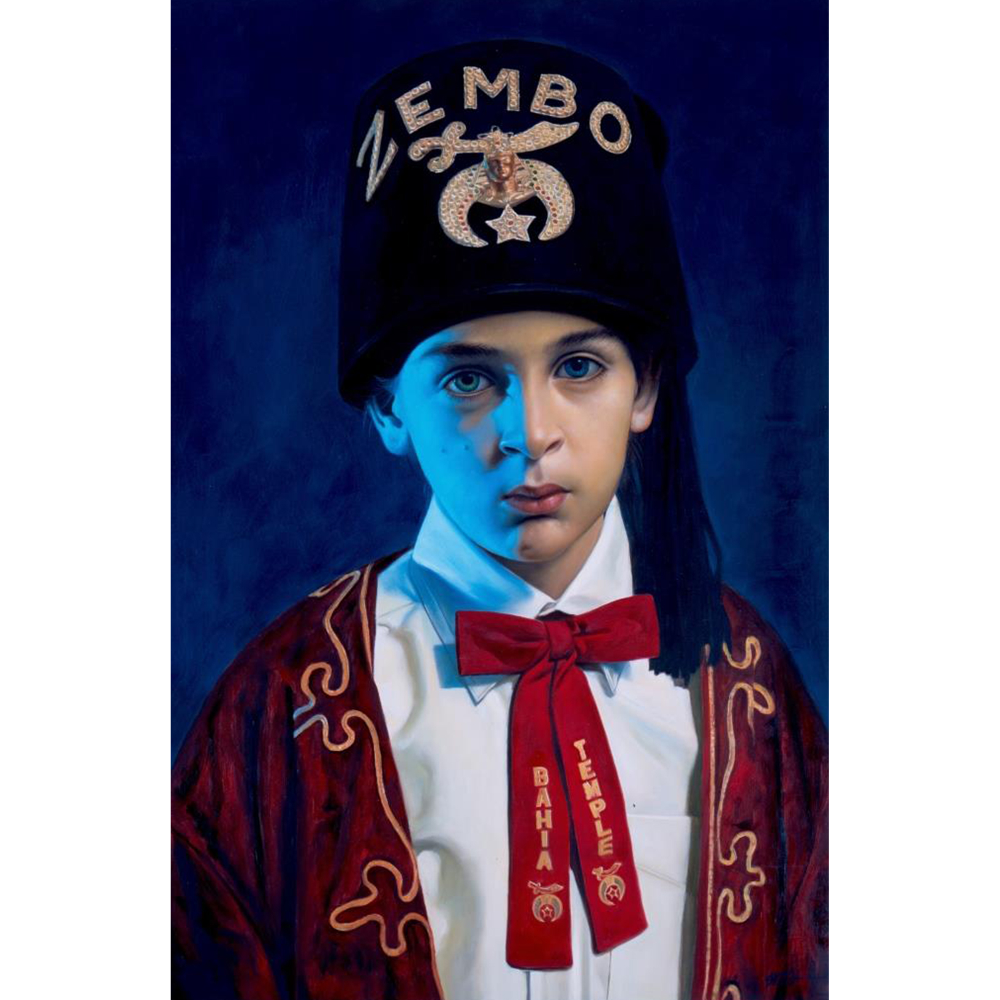
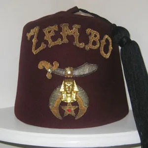
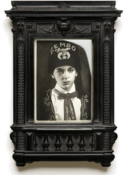

Literature
Ron English & Morgan Spurlock, Abject Expressionism: The Art of Ron English (San Francisco: Last Gasp, 2007), p. 62. ISBN 978-0867196894.
Ron English, Original Grin: The Art of Ron English (Paris: Cernunnos, 2019), p. 121. ISBN 978-2374950938.
Notes
In Original Grin, this work is mislabeled as Zembo Boy II.
This work references Shriners fraternal regalia, specifically a Zembo Shriners fez.
Ancillary Documentation


